- MacDive から移行する書き出すファイルと、何も失わずに移行する方法。
- コンピューターからダウンロードするShearwater などの Bluetooth コンピューター、または Mac でのケーブル。
- Garmin Descentウォッチまたは Garmin Connect から .fit ファイルを読み込みます。
うまく動かないときは？ トラブルシューティングを参照してください。Thermocline はログブックです。ダイブコンピューターが記録した内容を表示し、減圧を計算することは決してありません。
アプリを入手する
Thermocline は Apple デバイス（iPhone、iPad、Mac、Apple Watch）専用です。ベータ期間中は、Apple の TestFlight アプリからインストールします。
| 作業 | iPhone と iPad | Mac |
|---|---|---|
| ベータに参加 | ベータに参加: iPhone、iPad、Mac、Apple Watch 共通のリンクはひとつです。各デバイスでリンクを開き、TestFlight からインストールしてください。Apple Watch アプリは iPhone アプリと一緒に入ります。すべてのデバイスが iCloud を通じて同じログブックを共有します。 | |
| 2026年11月18日より前に iPhone のベータに参加した場合 | そのアプリは移転しました。古い iPhone アプリからの移行を参照してください。 | |
| 最新の状態に保つ | TestFlight に新しいビルドが表示されたら、使っているすべてのデバイスをアップデートしてください。古いビルドはアップデートされるまで変更の送信を停止し、その旨を表示します。何も失われません。 | |
初めての起動とツアー
初めて起動すると、名前、単位、ダイブの取り込み元を尋ねられます。単位はメートル法で保存され、変更しても変わるのは表示だけです。
| 作業 | iPhone と iPad | Mac |
|---|---|---|
| 設定 | プロフィール タブ | Thermocline → 設定 |
| ツアー | プロフィール → ヘルプ → ツアーを表示 | ヘルプ → ツアーを見る |
ツアーでは、あなたのログブックではなくサンプルログブックを使って、すべての画面を順に紹介します。
このページのスクリーンショットは、ツアーのサンプルログブックを表示しています。ダイブとポイントは架空のものです。タップすると原寸で表示されます。

ログブックを取り込む
Thermocline は、MacDive（そのフォルダ、XML、UDDF）、Shearwater Cloud データベース、Garmin の .fit ファイル、各種ログブックの UDDF、CSV を読み込めます。追加するダイブを選べ、読み込めなかったものは一覧で示され、黙って捨てられることは決してありません。
| 作業 | iPhone と iPad | Mac |
|---|---|---|
| ファイルを読み込む | プロフィール → データ → ログブックファイルを読み込む を選び、iCloud Drive または「ファイル」から選択します。 | 「ファイル」メニューの読み込みコマンド（⇧⌘I）。 |
| Garmin の .fit ファイル | 複数をまとめて選択できます。 | 複数のファイル、またはフォルダごと選択できます。 |
| MacDive のフォルダ（写真付き） | Mac のみ。写真はあとで Mac アプリから取り込んでください。 | ファイル → MacDive から読み込む… を選び、MacDive のフォルダを選択します: ダイブ、ダイブの写真、カードの写真。MacDive のファイルは変更されません。 |
| ダイブを選ぶ | 不要なダイブのチェックを外し、読み込むを選びます。 | |
| 読み込みを取り消す | 復元ポイント読み込みの前。2 本以上のダイブを読み込むときは、その前に保存されます。 | 読み込みレポートの読み込みを取り消す…、または同じ復元ポイント。 |
読み込みが終わると、追加されたダイブの本数、読み込まれなかった項目とその理由、確認が必要な点がレポートに表示されます。ファイルにガスがなかったダイブは要確認で待機します。
どの MacDive ファイルを使うか
MacDive からは、XML、UDDF、または（Mac では）フォルダ全体を取り出せます。含まれる内容は同じではありません:
| 含まれる内容 | MacDive XML | MacDive UDDF | MacDive のフォルダ（Mac） |
|---|---|---|---|
| ダイブ、ポイント、バディ、ガス | はい | はい | はい |
| タンクの容量 | はい | いいえ: 容量が内容積ではないため、空欄になります | はい |
| 水深プロファイル | すべてのダイブ | すべてのダイブ | MacDive が iPhone または iPad でダウンロードしたダイブ（暗号化して保存）を除くすべて |
| ダイブ中のコンピューターの NDL と ppO₂ | はい | いいえ | はい（暗号化されたダイブを除く） |
| コンピューターの CNS | はい | いいえ | はい |
| 器材、タグ、ダイブの種類 | はい | いいえ | はい |
| ダイブとカードの写真 | いいえ | いいえ | はい |
| 作業 | iPhone と iPad | Mac |
|---|---|---|
| おすすめの方法 | MacDive からダイブを XML で書き出し、ファイルを iCloud Drive に保存して読み込みます。 | MacDive のフォルダを読み込み、その上に XML を読み込みます。暗号化されたダイブのプロファイル、NDL、ppO₂ が XML で補われます。 |
| すでに UDDF を読み込んだ場合 | XML も読み込んでください。すでにログブックにあるダイブは照合され、再び追加されることはなく、タンクの容量を含め、足りない内容だけが補われます。あなたが入力または修正した内容は変更されません。 | |
Garmin Descent ウォッチ
Garmin Descent は、1 本のダイブごとに 1 つの .fit ファイルを保存します。取り出す方法は 2 つあります:
- ウォッチから: 付属のケーブルで Mac に接続し、GARMIN → Activity フォルダを開きます。Mac では GARMIN フォルダごと読み込めます。ランニングや設定など、ダイブではないファイルはスキップされます。
- Garmin Connect から: ダイブを開き、オリジナルをエクスポート を選びます。.zip ファイルが得られるので、先に解凍してから、中の .fit ファイルを読み込んでください。
位置はウォッチの GPS から取得されます。ドリフトダイブでは、ウォッチは浮上した場所を開始地点として保存しますが、読み込み時に実際にエントリーした場所を見つけるので、ダイブはそのポイントに照合されます。途中で通過したほかの沈船は、メモに追加してください。

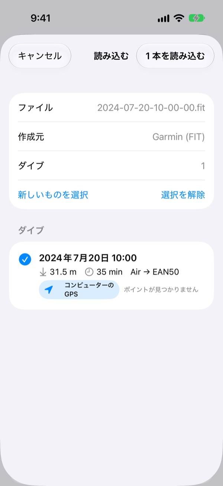
コンピューターからダイブをダウンロード
まずダイブコンピューターを Bluetooth モードにします。Shearwater の場合: Menu → Bluetooth。このモードは約 2 分間続きます。前回のダウンロード以降の新しいダイブだけを取得します。
| 作業 | iPhone と iPad | Mac |
|---|---|---|
| 開く | ログブック → ダイブをダウンロード | ファイル → ダイブコンピューターからダウンロード…（⇧⌘D） |
| 接続する | Bluetooth。近くのデバイスでコンピューターを選びます。初回は、コンピューターの画面に表示される PIN を入力します。 | Bluetooth または USB ケーブルを選びます。ケーブルの場合は、コンピューターのモデルとポートを選び、始める前にの手順に従ってください。 |
| 完了する | 不要なダイブのチェックを外し、残すを選びます。チェックを外したダイブはコンピューターに残り、次回また表示されます。 | ダウンロード。 |
時計についての質問。 各コンピューターから初めてダウンロードするときに、コンピューターの時計はどのタイムゾーンに設定されていますか？と尋ねられます。ほとんどのコンピューターはタイムゾーンなしで現地時刻を記録するため、これによって旅行先でもダイブの時刻が正しく保たれます。回答はそのコンピューター用に記憶されます。
ダイブを選んだあとは、1 本ずつ順にポイントとガスを設定するか、あとで完了するを選べます。その場合、ダイブは要確認で待機します。
削除したダイブを戻したいときは？ コンピューター内のすべてのダイブをダウンロードをオンにしてください。時間はかかりますが、すでにログブックにあるダイブはスキップされます。

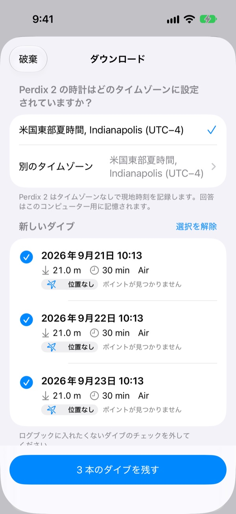
Shearwater Predator と Petrel 1
これらは、iPhone や iPad では使えない古い Bluetooth（Bluetooth Classic）を使っています。Mac では、先に システム設定 → Bluetooth でコンピューターをペアリングし、ダウンロードウインドウで USB ケーブルを選びます。そのポートが一覧に表示されることがあります。コンピューターを Bluetooth アップロードモードにして、「ダウンロード」を選んでください。実機の Predator や Petrel 1 ではまだ試していないため、うまくいってもいかなくても、ダウンロードログを送ってください。iPhone では、代わりに Shearwater Cloud または UDDF ファイルからダイブを読み込んでください。
対応コンピューター
Thermocline は、多くのログブックが共有しているオープンソースのライブラリ libdivecomputer を使ってダウンロードします。ほとんどのメーカーの数百機種に対応しています。お使いの機種を確認するには、ダウンロード画面を開いて対応コンピューターを選んでください。機種ごとに、iPhone と iPad で使えるか、Mac が必要かが表示されます。
| 接続方法 | 使えるデバイス | これまでの検証 |
|---|---|---|
| Bluetooth LE | iPhone、iPad、Mac | Shearwater Perdix と Perdix 2。ほかの機種でも動作するはずです。結果を教えてください。 |
| USB ケーブルまたはシリアルケーブル | Mac のみ | 実装済み。まだ実機では試していません。 |
| Bluetooth Classic（Predator、Petrel 1、その他の古い機種） | Mac のみ。シリアルポートとしてペアリング（方法） | まだ試していません。 |
| Garmin Descent（.fit ファイル） | iPhone、iPad、Mac で読み込み（方法） | ドリフトダイブを含む Descent のダイブ。 |
まだ試していないコンピューターをお持ちですか？ テストにご協力ください。
ポイントとガスを確認
ポイントがない、またはガスが確認されていないダイブは、要確認で待機します。保存が妨げられることはないので、好きなときに入力してください。
| 作業 | iPhone と iPad | Mac |
|---|---|---|
| 探す | ログブック の一番上、要確認の下。 | 移動 → 要確認（⌘2） |
| 確認する | ダイブを開き、ポイントを選択して、はい、これらのガスで正しいです（またはガスを修正…）をタップします。 | 各ダイブのバナーに、ポイントとガスを確認…、ポイントを選択…、ガスを確認…が表示されます。 |
Thermocline はダイブの位置からポイントを提案します。まず自分のポイント、次にオフラインで使える 76,000 件以上のダイビングポイントと沈船の内蔵リストから提案します。

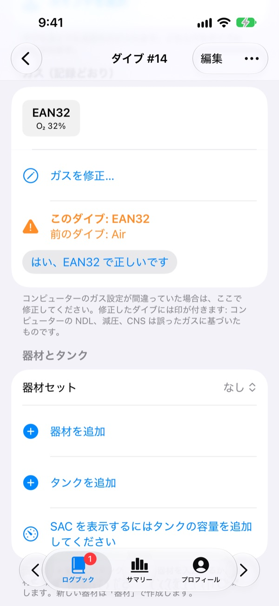
ダイブを読む
| 作業 | iPhone と iPad | Mac |
|---|---|---|
| どの時点も読み取る | グラフの上をドラッグします。 | グラフにポインタを合わせます。 |
| ダイブを手入力で記録する | ログブック → 手入力で記録 | ⌘N |
- 安全に関わる値は、すべてのダイブの上部に固定された帯に、常に同じ位置で表示されます。
- プロファイル: グラフの下のチップで、タンク、ppO₂、NDL、SAC、水温、CNS、浮上の表示と非表示を切り替えます。表示は、帯を並べるか、ひとつに重ねるかを選べます。チップが表示されるのは、ダイブで記録された項目だけです。NDL はコンピューター自身の値で、減圧中は止まり、その間は赤い帯で減圧停止が示されます。幅の狭い iPhone では、チップは 1 行のまま横にスクロールします。ホームページで試してみてください。
- リブリーザー: 記録しているコンピューターやファイルであれば、ppO₂ の帯にセットポイントと Voted の ppO₂（記録されていれば各セルも）が表示され、読み取り値にはその時点のセットポイントが示されます。希釈ガスからほかのガスへの切り替えは、ベイルアウトとして表示されます。
- ガス消費: SAC の数値の横にある計算方法をタップまたはクリックすると、タンク、その内容積、圧力、水温、実在気体補正など、すべての入力値を確認できます。
- 編集: どのダイブも編集できます。修正しても、コンピューターの元の値は残ります。
- ウエイト: + を初めてタップするとウエイトなしになります。ウエイトを着けなかったダイブ用です。そこから − をタップすると消去されます。
- メモ内のリンク: ダイブのメモにある Web リンクは、タップまたはクリックできます。入力が終わったら、キーボードの上の完了をタップしてください。リンクが表示され、YouTube や Vimeo のリンクには、メモの下に… をビデオリンクに追加ボタンが表示されます。メモにもう一度入力するには、メモを編集を選びます。


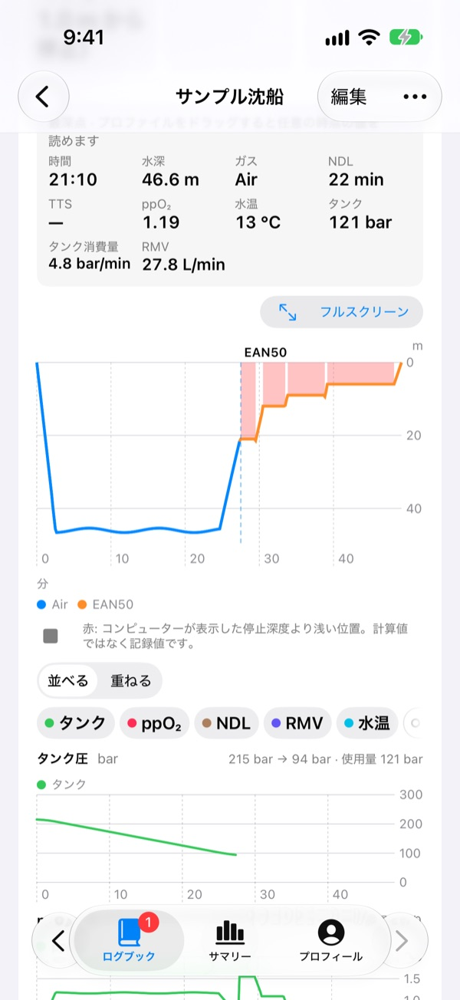


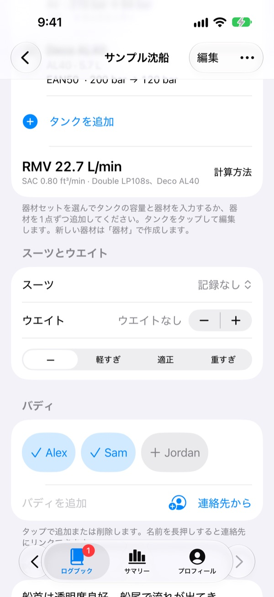

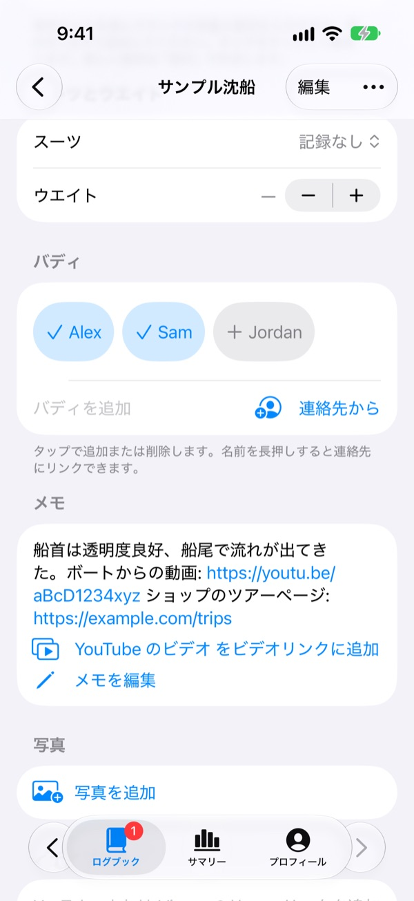

ポイント、位置、Apple Watch
| 作業 | iPhone と iPad | Mac |
|---|---|---|
| ポイントを追加する | プロフィール → ポイント で追加ボタンをタップし、ポイントを検索または名前を付けるかここで地点をマーク（GPS）を選びます。 | 移動 → ポイント（⌘4）でポイントを追加… |
| 掲載されているすべてのポイントを見る | プロフィール → ポイント → 地図 で地球儀ボタンをタップするか、ピンチインしていちばん遠くまで縮小します。沈船はオレンジ、リーフとダイビングポイントは青、自分のポイントは赤い旗です。 | ポイント でツールバーの地球儀を表示を選ぶか、いっぱいまでズームアウトします。 |
| 位置を探す | 位置のないポイントには位置を検索が表示されます。地図で候補を確認するか、座標を入力するか、ピンを置いてください。 | 位置を検索…で、位置のないすべてのポイントを 1 か所ずつ順に処理します。 |
Apple Watch: 水面で地点をマークすると、iPhone の「要確認」で待機します。Apple Watch を参照してください。
ポイントの位置は記録用であり、ナビゲーション用ではありません。

Apple Watch
Watch アプリの役割はひとつです。水面で今いる場所をマークし、ダイブのポイントを記録しやすくします。ダイブは記録しません。ダイブはダイブコンピューターから取り込みます。watchOS 11 以降と、Thermocline の入った iPhone が必要です。
| 作業 | Apple Watch | iPhone |
|---|---|---|
| インストール | iPhone アプリと一緒に入ります。ウォッチに入っていない場合は、iPhone で Watch アプリを開き、利用可能なアプリで Thermocline を見つけてインストールをタップします。初回は、ウォッチで Thermocline に位置情報の使用を許可してください。 | |
| 地点をマークする | 水面でポイントの上にいるときに Thermocline を開きます。良好な測位になるまで待ち、地点をマークをタップします。保存されると、ウォッチが手首をタップして知らせます。 | 地点は自動的に届きます。iPhone が近くにない場合は、次に両方がそろったときに送信されます。 |
| 名前を付ける | 任意です。マークしたあと、またはあとでマークした地点から名前を追加をタップし、音声、手書き、キーボードで入力します（例:「沈船の船首」）。入力を終えると保存されます。 | その名前が新しいポイントの名前として提案されます。そのまま使うことも、別のポイントを選ぶこともできます。 |
| 確定する | ウォッチでの操作は不要です。 | ログブック → 要確認。iPhone はオンラインのときに地点を検索し、最も近い既知のポイントを提案して、その地点が属する可能性が最も高いダイブを表示します。確定するか破棄してください。 |
| 送信されたか確認する | マークした地点に、各地点がiPhone に送信済みまたはiPhone への送信待ちとして地図付きで表示されます。iPhone で確定または破棄した地点は、ウォッチから消えます。 | 確定すると、そのポイントはほかのポイントと同様に、ほかのデバイスへ同期されます。 |

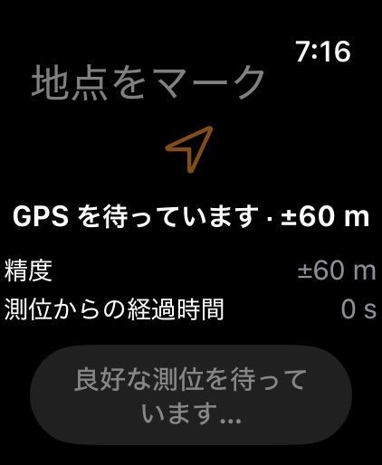

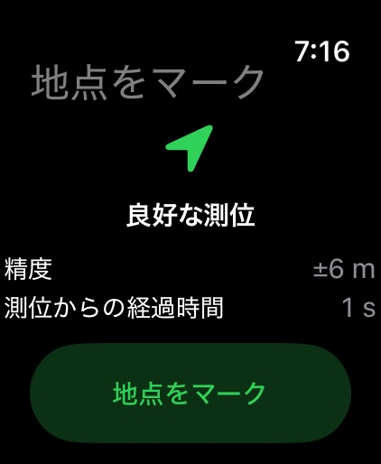

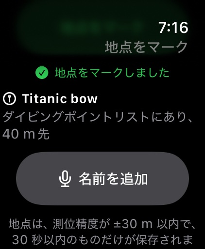

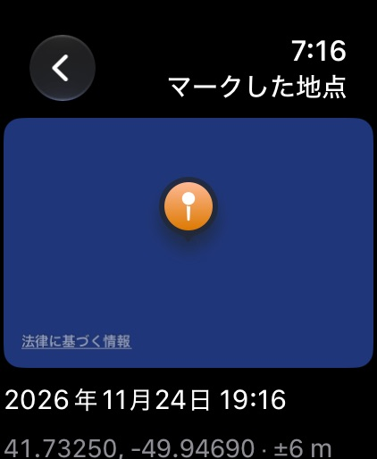
ウォッチが地点を保存するのは、誤差 ±30 m 以内で、取得から 30 秒未満の測位だけで、古いキャッシュの位置は無視します。水中ではなく、水面でマークしてください。
ポイントの位置は記録用であり、ナビゲーション用ではありません。
器材とタンク
| 作業 | iPhone と iPad | Mac |
|---|---|---|
| 器材を開く | プロフィール → 器材 | 移動 → 器材 |
- タンクのモデルを選ぶとタンクのカタログが開きます。メーカーやモデルで検索して（例:「PST LP104」）公表されている容量を入力するか、自分で数値を入力してください。
- ツインセットにはダブルタンク（マニフォールド接続）にチェックを入れます。
- + の刻印があるスチールタンク: 前回の耐圧検査で + が維持されている間は、+ 刻印をオンにします。たとえば 2400+ のように表示されます。このスイッチは、タンクの容量を立方フィートで表示しているときに表示されます。
- 各ダイブのタンクは、ダイブのガスのセクションにあります（タンクを追加、器材セット）。
ダイブの統合と結合
- 統合は、2 台のコンピューターで記録した 1 本のダイブのためのものです。両方の記録が残り、グラフ上で切り替えられます。
- 結合は、短時間の浮上で 2 つに分かれた 1 本のダイブのためのものです。
- Thermocline がどちらかを勝手に行うことは決してありません。該当しそうな組み合わせを見つけると、ログブックの上部にバナーが表示され、確認を提案します。
| 作業 | iPhone と iPad | Mac |
|---|---|---|
| 自分で行う | 選択をタップして 2 本のダイブを選び、統合または結合をタップします。 | 2 本のダイブを選択して右クリックし、これらのダイブを統合…またはこれらのダイブを結合…を選びます。 |
| やめたくなったら | すぐに取り消すか、いつでもダイブ上のこれらのダイブを分割を使います。 | |
写真とビデオリンク
- ダイブの写真を追加を使うと、ライブラリからログブックに写真がコピーされます。
- iCloud の容量を節約するには、すべてのデバイスで 同期 → ダイブの写真で iCloud ストレージを節約 をオンにします。写真はコピーではなく iCloud写真へのリンクになり、ライブラリのビデオも追加できるようになります。Thermocline が写真へのアクセスを求めるのは、これをオンにしたときだけです。
- ビデオリンク: ダイブの写真の下に YouTube または Vimeo のリンクを貼り付けます。保存されるのはリンクだけです。メモにすでにあるリンクは、そこから追加できます（ダイブを読むを参照）。
- 複数のダイブに同じビデオを: ダイブを選択し（iPhone では先に「選択」をタップ）、… 本のダイブを編集…を選んで、ビデオリンクにリンクを追加します。選択したすべてのダイブに追加され、各ダイブにすでにあるリンクは残ります。
サマリーとガス消費
サマリータブ（Mac ではサイドバーの「サマリー」）では、ログブックを集計します: 年別と月別のダイブ数、水深、ガス、記録、潜った場所、最も多く潜ったポイントとバディ。上部で 1 年などの期間を選び、数値や棒をタップすると、その元になったダイブが表示されます。
- ガス消費には、期間内でタンクの容量と開始圧・終了圧があるすべてのダイブの SAC と RMV が、時間と水深で重み付けして表示されます。タップすると、計算に含まれたダイブがわかります。
- 読み込んだダイブの中にはタンクの容量がないものがあるため、最初は「ガス消費」が空のことがあります（どの MacDive ファイルを使うかを参照）。器材で、または各ダイブでタンクを設定すると、表示されるようになります。

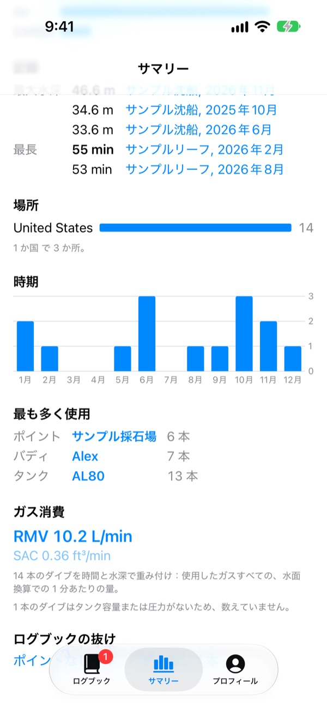
iCloud と同期
| 作業 | iPhone と iPad | Mac |
|---|---|---|
| 同期をオンにする | プロフィール → 同期 | Thermocline → 設定 → 同期 |
これで、同じ Apple Account にサインインしているすべてのデバイスが、あなた自身のプライベートな iCloud に保存されたひとつのログブックを共有します。オフラインで行った変更はデバイスで待機し、オンラインに戻ると送信されます。
「同期」セクションには、状態、送信待ちの項目、このデバイスとほかのデバイスが一致しているかどうかが表示されます。今すぐ同期を押すと、すぐに確認します。

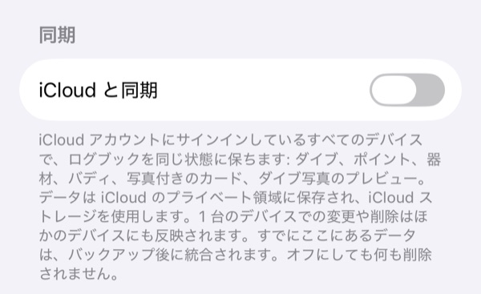
書き出し、復元ポイント、消去
| 作業 | iPhone と iPad | Mac |
|---|---|---|
| 書き出し | プロフィール → データ | 「ファイル」メニュー |
| 復元ポイント | プロフィール → データ → 復元ポイント | 設定 → データ → 復元ポイント |
- 書き出し: UDDF は完全な書き出し形式で、どのログブックにも移れる手段です。ほかに、スプレッドシート（CSV）、MacDive XML、ケーブ測量用ブックマーク（CSV）、講習の受講条件向けの経験本数のまとめ（テキスト）も使えます。
- 復元ポイント: 同期をオンにする前、大量の読み込み、統合、結合、消去の前、そして何かを削除する前に保存されます。復元すると、先に現在のログブックが復元ポイントとして保存されるので、復元を取り消せます。
- 消去: ログブックを消去…では、先に書き出すことを提案します。同期がオンの場合は、ほかのデバイスも同じようになります。

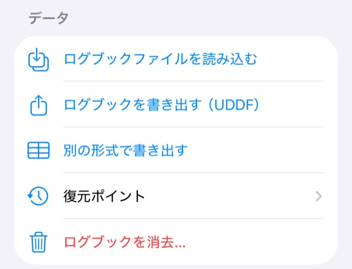
それでも解決しないときは？
トラブルシューティングを参照するか、TestFlight から、または brian@616labs.net にフィードバックを送ってください。